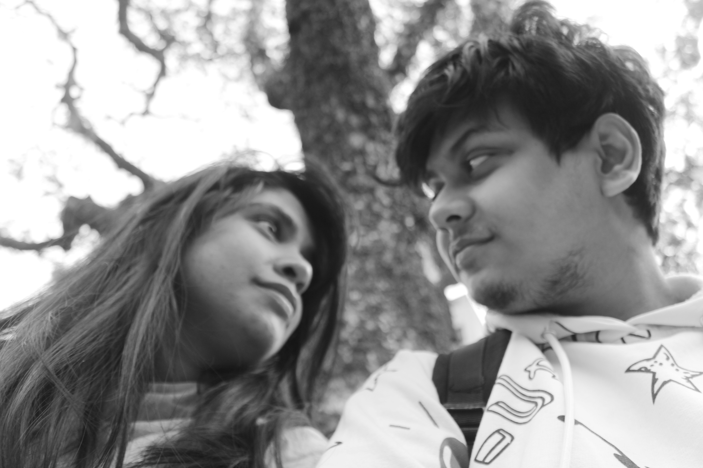
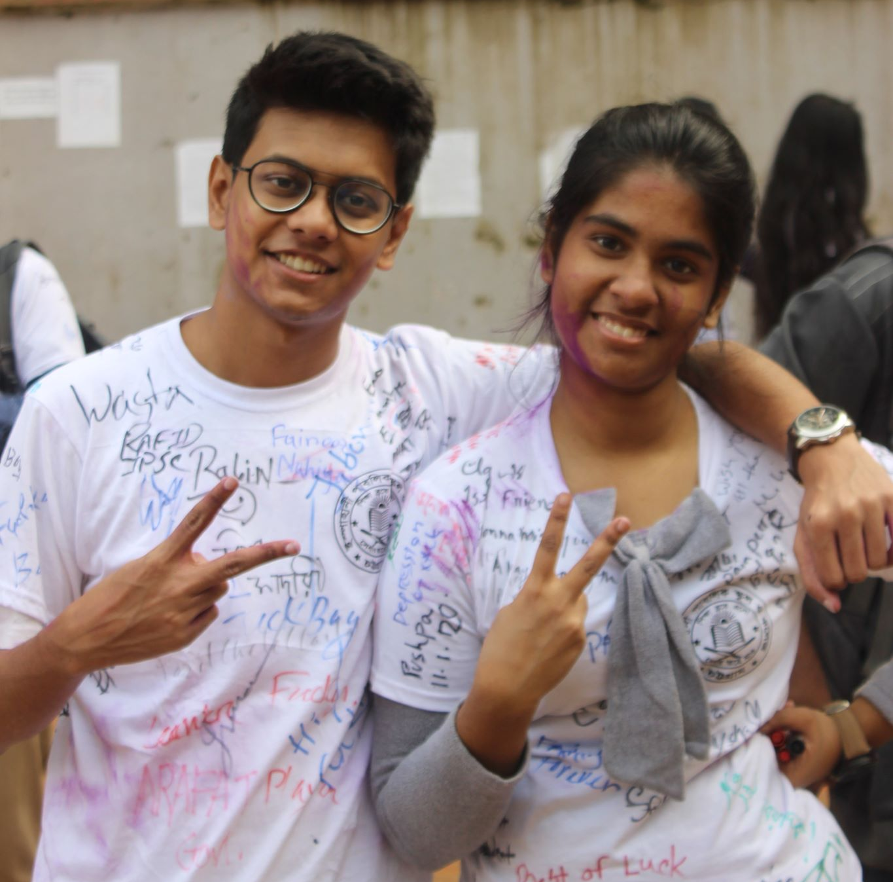
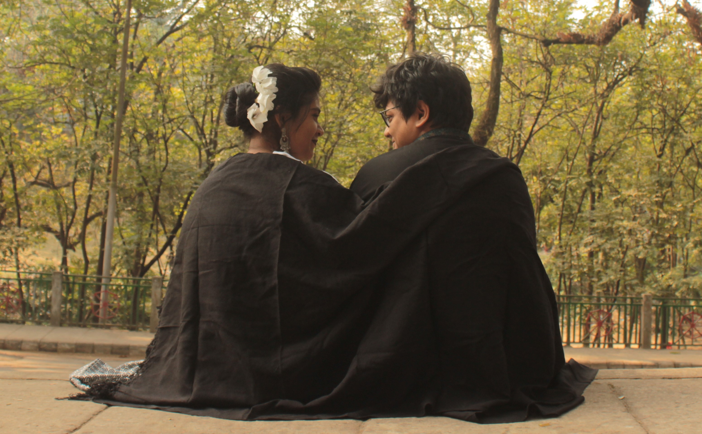

My Love

Hey Love,
Ever since we’ve been together, you have been such a support system in everything that I have wanted to do.
Whether it was switching up my career or moving to a new home, you being by my side has made everything in my
life so easy and smooth.
Thank you for bringing love, stability, and affection into my life – something that I never imagined would happen
before I met you. Your positive energy has been my strength throughout, and I cannot imagine spending my life
with anyone else but you.
Your proud wife,
[Humu!]
How It Started

I never knew that an introvert like you would lovingly adopt an extrovert like me and completely change my life.
While you see the glass as half full, I am more of a glass-half-empty kind of person, yet somehow we fit. So,
thank you for showing love and care even on the days I find myself hard to love.I love you for not judging me for
the way I am and, instead, embracing my weirdness as my quirk. I can’t wait to spend more and more time getting
to know each other’s personalities, no matter how different they are.
How It's Going

The day we got married is one of the best days of my life, as on that day I found my best friend as my Husband
as my life. It is true, I was skeptical in the beginning, but you made me feel so loved and comfortable, that I
cannot imagine a life without you. Now, I genuinely feel I am the luckiest girl on earth, for I have a
man who is loyal to me.
I want to confess that, every night after you drift away to sleep, I stay awake just to watch you sleep.
You may think I am crazy, but I cannot help it, I am obsessed with you. I only want one thing in life
now, to be your only love forever.Your loving wife.
In The END I wanna Say you that, JAAANI REALLY LOVE YOU. I never want to lose you, please
stay and forgive my all mistakes and angers. (PLEASE, I BEG YOU)